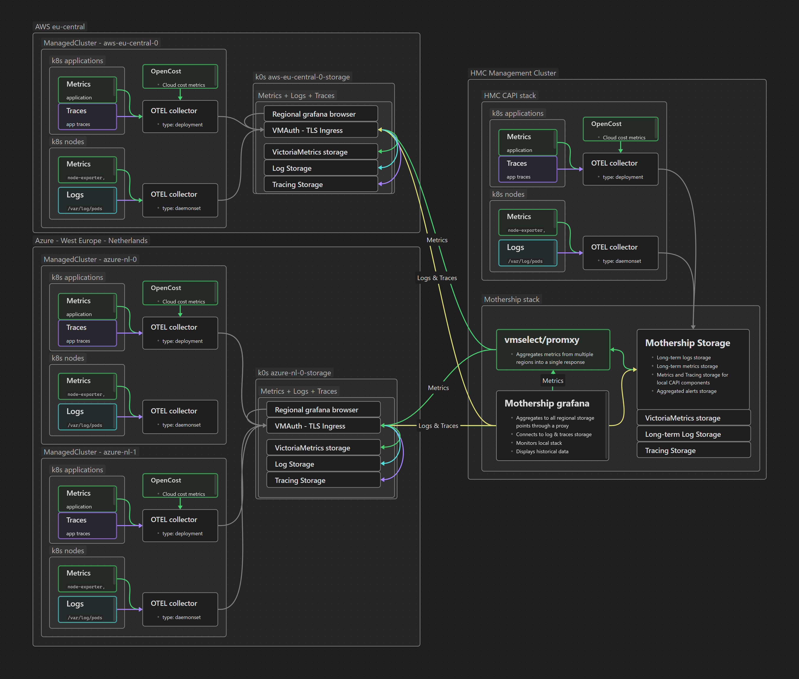
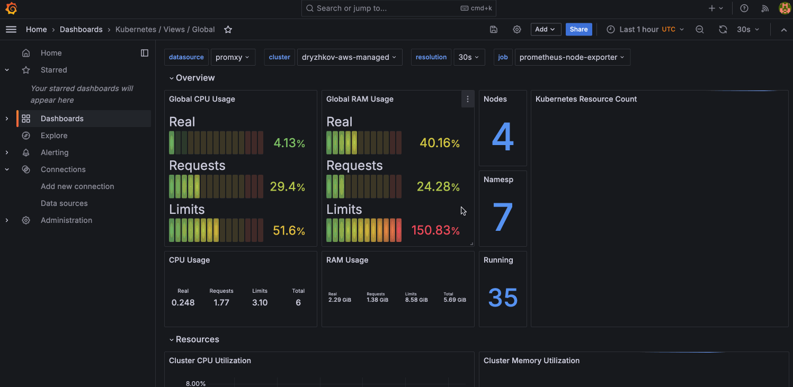

k0rdent Observability and FinOps (kof)#
Overview#
k0rdent Observability and FinOps (kof) provides enterprise-grade observability and FinOps capabilities for k0rdent-managed child Kubernetes clusters. It enables centralized metrics, logging, and cost management through a unified OpenTelemetry-based architecture.
Architecture#
High-level#
From a high-level perspective, KOF consists of three layers:
- the Collection layer, where the statistics and events are gathered,
- the Regional layer, which includes storage to keep track of those statistics and events,
- and the Management layer, where you interact through the UI.
┌────────────────┐
│ Management │
│ UI, promxy │
└────────┬───────┘
│
┌──────┴──────┐
│ │
┌────┴─────┐ ┌─────┴────┐
│ Regional │ │ Regional │
│ region 1 │ │ region 2 │
└────┬─────┘ └─────┬────┘
│ │
┌──────┴──────┐ ...
│ │
┌─────┴─────┐ ┌─────┴─────┐
│ Collect │ │ Collect │
│ child 1 │ │ child 2 │
└───────────┘ └───────────┘
Mid-level#
Getting a little bit more detailed, it's important to undrestand that data flows upwards, from observed objects to centralized Grafana on the Management layer:
management cluster_____________________
│ │
│ kof-mothership chart_____________ │
│ │ │ │
│ │ grafana-operator │ │
│ │ victoria-metrics-operator │ │
│ │ cluster-api-visualizer │ │
│ │ sveltos-dashboard │ │
│ │ k0rdent service templates │ │
│ │ promxy │ │
│ │_______________________________│ │
│ │
│ kof-operators chart_____________ │
│ │ │ │
│ │ opentelemetry-operator │ │
│ │ prometheus-operator-crds │ │
│ │______________________________│ │
│_____________________________________│
cloud 1...
│
│ region 1__________________________________________ region 2...
│ │ │ │
. │ regional cluster____________________ │ │
. │ │ │ │ │
. │ │ kof-storage chart_____________ │ │ .
│ │ │ │ │ │ .
│ │ │ grafana-operator │ │ │ .
│ │ │ victoria-metrics-operator │ │ │
│ │ │ victoria-logs-single │ │ │
│ │ │ external-dns │ │ │
│ │ │____________________________│ │ │
│ │ │ │
│ │ cert-manager (grafana, vmauth) │ │
│ │ ingress-nginx │ │
│ │__________________________________│ │
│ │
│ │
│ child deployment 1____________________ 2... │
│ │ │ │ │
│ │ cert-manager (OTel-operator) │ │ │
│ │ │ │ │
│ │ kof-operators chart_____________ │ . │
│ │ │ │ │ . │
│ │ │ opentelemetry-operator____ │ │ . │
│ │ │ │ │ │ │ │
│ │ │ │ OpenTelemetryCollector │ │ │ │
│ │ │ │________________________│ │ │ │
│ │ │ │ │ │
│ │ │ prometheus-operator-crds │ │ │
│ │ │______________________________│ │ │
│ │ │ │
│ │ kof-collectors chart________ │ │
│ │ │ │ │ │
│ │ │ opencost │ │ │
│ │ │ kube-state-metrics │ │ │
│ │ │ prometheus-node-exporter │ │ │
│ │ │__________________________│ │ │
│ │ │ │
│ │ observed objects │ │
│ │____________________________________│ │
│________________________________________________│
Low-level#
At a low level, you can see how logs and traces work their way around the system.

Helm Charts#
KOF is deployed as a series of Helm charts at various levels.
kof-mothership#
- Centralized Grafana dashboard, managed by grafana-operator
- Local VictoriaMetrics storage for alerting rules only, managed by victoria-metrics-operator
- cluster-api-visualizer for insight into multicluster configuration
- Sveltos dashboard, automatic secret distribution
- k0rdent service templates to deploy other charts to regional clusters
- Promxy for aggregating Prometheus metrics from regional clusters
kof-storage#
- Regional Grafana dashboard, managed by grafana-operator
- Regional VictoriaMetrics storage with main data, managed by victoria-metrics-operator
- vmauth entrypoint proxy for VictoriaMetrics components
- vmcluster for high-available fault-tolerant version of VictoriaMetrics database
- victoria-logs-single for high-performance, cost-effective, scalable logs storage
- external-dns to communicate with other clusters
kof-operators#
- prometheus-operator-crds required to create OpenTelemetry collectors, also required to monitor
kof-mothershipitself - OpenTelemetry collectors below, managed by opentelemetry-operator
kof-collectors#
- prometheus-node-exporter for hardware and OS metrics
- kube-state-metrics for metrics about the state of Kubernetes objects
- OpenCost "shines a light into the black box of Kubernetes spend"
Installation#
Prerequisites#
Before beginning KOF installation, you should have the following components in place:
- A k0rdent management cluster - You can get instructions to create one in the quickstart guide
- To test on macOS you can install using:
brew install kind && kind create cluster -n k0rdent
- To test on macOS you can install using:
- You will also need your infrastructure provider credentials, such as those shown in the guide for AWS
- Note that you should skip the "Create your ClusterDeployment" and later sections.
- Finally, you need access to create DNS records for service endpoints such as
kof.example.com
DNS auto-config#
To avoid manual configuration of DNS records for service endpoints later, you can automate the process now using external-dns.
For example, for AWS you should use the Node IAM Role or IRSA methods in production.
For now, however, just for the sake of this demo based on the aws-standalone template,
you can use the most straightforward (though less secure) static credentials method:
- Create an
external-dnsIAM user with this policy. - Create an access key and
external-dns-aws-credentialsfile, as in:[default] aws_access_key_id = <EXAMPLE_ACCESS_KEY_ID> aws_secret_access_key = <EXAMPLE_SECRET_ACCESS_KEY> - Create the
external-dns-aws-credentialssecret in thekofnamespace:kubectl create namespace kof kubectl create secret generic \ -n kof external-dns-aws-credentials \ --from-file external-dns-aws-credentials
Management Cluster#
To install KOF on the management cluster, look through the default values of the kof-mothership and kof-operators charts, and apply this example, or use it as a reference:
-
Install
kof-operatorsrequired bykof-mothership:helm install --wait --create-namespace -n kof kof-operators \ oci://ghcr.io/k0rdent/kof/charts/kof-operators --version 0.1.1 -
Create the
mothership-values.yamlfile:This enables installation ofkcm: installTemplates: trueServiceTemplatessuch ascert-managerandkof-storage, to make it possible to reference them from the Regional and ChildClusterDeployments. -
If you want to use a default storage class, but
kubectl get scshows no(default), create it. Otherwise you can use a non-default storage class in themothership-values.yamlfile:global: storageClass: <EXAMPLE_STORAGE_CLASS> -
If you've applied the DNS auto-config section, add to the
kcm:object in themothership-values.yamlfile:This enables Sveltos to auto-distribute DNS secret to regional clusters.kof: clusterProfiles: kof-aws-dns-secrets: matchLabels: k0rdent.mirantis.com/kof-aws-dns-secrets: "true" secrets: - external-dns-aws-credentials -
Two secrets are auto-created by default:
-
Install
kof-mothership:helm install --wait -f mothership-values.yaml -n kof kof-mothership \ oci://ghcr.io/k0rdent/kof/charts/kof-mothership --version 0.1.1 -
Wait for all pods to show that they're
Running:kubectl get pod -n kof
Regional Cluster#
To install KOF on the regional cluster, look through the default values of the kof-storage chart, and apply this example for AWS, or use it as a reference:
-
Set your KOF variables using your own values:
REGIONAL_CLUSTER_NAME=cloud1-region1 REGIONAL_DOMAIN=$REGIONAL_CLUSTER_NAME.kof.example.com ADMIN_EMAIL=$(git config user.email) echo "$REGIONAL_CLUSTER_NAME, $REGIONAL_DOMAIN, $ADMIN_EMAIL" -
Use the up-to-date
ClusterTemplate, as in:kubectl get clustertemplate -n kcm-system | grep aws TEMPLATE=aws-standalone-cp-0-1-0 -
Compose the following objects:
ClusterDeployment- regional clusterPromxyServerGroup- for metricsGrafanaDatasource- for logs
cat >regional-cluster.yaml <<EOF apiVersion: k0rdent.mirantis.com/v1alpha1 kind: ClusterDeployment metadata: name: $REGIONAL_CLUSTER_NAME namespace: kcm-system labels: kof: storage spec: template: $TEMPLATE credential: aws-cluster-identity-cred config: clusterIdentity: name: aws-cluster-identity namespace: kcm-system controlPlane: instanceType: t3.large controlPlaneNumber: 1 publicIP: true region: us-east-2 worker: instanceType: t3.medium workersNumber: 3 clusterLabels: k0rdent.mirantis.com/kof-storage-secrets: "true" k0rdent.mirantis.com/kof-aws-dns-secrets: "true" serviceSpec: priority: 100 services: - name: ingress-nginx namespace: ingress-nginx template: ingress-nginx-4-11-3 - name: cert-manager namespace: cert-manager template: cert-manager-1-16-2 values: | cert-manager: crds: enabled: true - name: kof-storage namespace: kof template: kof-storage-0-1-1 values: | external-dns: enabled: true victoriametrics: vmauth: ingress: host: vmauth.$REGIONAL_DOMAIN security: username_key: username password_key: password credentials_secret_name: storage-vmuser-credentials grafana: ingress: host: grafana.$REGIONAL_DOMAIN security: credentials_secret_name: grafana-admin-credentials cert-manager: email: $ADMIN_EMAIL --- apiVersion: kof.k0rdent.mirantis.com/v1alpha1 kind: PromxyServerGroup metadata: labels: app.kubernetes.io/name: promxy-operator k0rdent.mirantis.com/promxy-secret-name: kof-mothership-promxy-config name: promxyservergroup-sample namespace: kof spec: cluster_name: $REGIONAL_CLUSTER_NAME targets: - "vmauth.$REGIONAL_DOMAIN:443" path_prefix: /vm/select/0/prometheus/ scheme: https http_client: dial_timeout: "5s" tls_config: insecure_skip_verify: true basic_auth: credentials_secret_name: storage-vmuser-credentials username_key: username password_key: password --- apiVersion: grafana.integreatly.org/v1beta1 kind: GrafanaDatasource metadata: labels: app.kubernetes.io/managed-by: Helm name: victoria-logs-regional0 namespace: kof spec: valuesFrom: - targetPath: "basicAuthUser" valueFrom: secretKeyRef: key: username name: storage-vmuser-credentials - targetPath: "secureJsonData.basicAuthPassword" valueFrom: secretKeyRef: key: password name: storage-vmuser-credentials datasource: name: $REGIONAL_CLUSTER_NAME url: https://vmauth.$REGIONAL_DOMAIN/vls access: proxy isDefault: false type: "victoriametrics-logs-datasource" basicAuth: true basicAuthUser: \${username} secureJsonData: basicAuthPassword: \${password} instanceSelector: matchLabels: dashboards: grafana resyncPeriod: 5m EOF -
The
ClusterTemplateabove provides the default storage classebs-csi-default-sc. If you want to use a non-default storage class, add it to theregional-cluster.yamlfile in theClusterDeployment.spec.serviceSpec.services[name=kof-storage].values:global: storageClass: <EXAMPLE_STORAGE_CLASS> victoria-logs-single: server: storage: storageClassName: <EXAMPLE_STORAGE_CLASS> -
Verify and apply the Regional
ClusterDeployment:cat regional-cluster.yaml kubectl apply -f regional-cluster.yaml -
Watch how the cluster is deployed to AWS until all values of
READYareTrue:clusterctl describe cluster -n kcm-system $REGIONAL_CLUSTER_NAME \ --show-conditions all
Child Cluster#
To install KOF on the actual cluster to be monitored, look through the default values of the kof-operators and kof-collectors charts, and apply this example for AWS, or use it as a reference:
-
Set your own value below, verifing the variables:
CHILD_CLUSTER_NAME=$REGIONAL_CLUSTER_NAME-child1 echo "$CHILD_CLUSTER_NAME, $REGIONAL_DOMAIN" -
Use the up-to-date
ClusterTemplate, as in:kubectl get clustertemplate -n kcm-system | grep aws TEMPLATE=aws-standalone-cp-0-1-0 -
Compose the
ClusterDeployment:cat >child-cluster.yaml <<EOF apiVersion: k0rdent.mirantis.com/v1alpha1 kind: ClusterDeployment metadata: name: $CHILD_CLUSTER_NAME namespace: kcm-system labels: kof: collector spec: template: $TEMPLATE credential: aws-cluster-identity-cred config: clusterIdentity: name: aws-cluster-identity namespace: kcm-system controlPlane: instanceType: t3.large controlPlaneNumber: 1 publicIP: false region: us-east-2 worker: instanceType: t3.small workersNumber: 3 clusterLabels: k0rdent.mirantis.com/kof-storage-secrets: "true" serviceSpec: priority: 100 services: - name: cert-manager namespace: kof template: cert-manager-1-16-2 values: | cert-manager: crds: enabled: true - name: kof-operators namespace: kof template: kof-operators-0-1-1 - name: kof-collectors namespace: kof template: kof-collectors-0-1-1 values: | global: clusterName: $CHILD_CLUSTER_NAME opencost: enabled: true opencost: prometheus: username_key: username password_key: password existingSecretName: storage-vmuser-credentials external: url: https://vmauth.$REGIONAL_DOMAIN/vm/select/0/prometheus exporter: defaultClusterId: $CHILD_CLUSTER_NAME kof: logs: username_key: username password_key: password credentials_secret_name: storage-vmuser-credentials endpoint: https://vmauth.$REGIONAL_DOMAIN/vls/insert/opentelemetry/v1/logs metrics: username_key: username password_key: password credentials_secret_name: storage-vmuser-credentials endpoint: https://vmauth.$REGIONAL_DOMAIN/vm/insert/0/prometheus/api/v1/write EOF -
Verify and apply the
ClusterDeployment:cat child-cluster.yaml kubectl apply -f child-cluster.yaml -
Watch while the cluster is deployed to AWS until all values of
READYareTrue:clusterctl describe cluster -n kcm-system $CHILD_CLUSTER_NAME \ --show-conditions all
Verification#
Finally, verify that KOF installed properly.
kubectl get clustersummaries -A -o wide
HELMCHARTS changes from Provisioning to Provisioned.
kubectl get secret -n kcm-system $REGIONAL_CLUSTER_NAME-kubeconfig \
-o=jsonpath={.data.value} | base64 -d > regional-kubeconfig
kubectl get secret -n kcm-system $CHILD_CLUSTER_NAME-kubeconfig \
-o=jsonpath={.data.value} | base64 -d > child-kubeconfig
KUBECONFIG=regional-kubeconfig kubectl get pod -A
# Namespaces: cert-manager, ingress-nginx, kof, kube-system, projectsveltos
KUBECONFIG=child-kubeconfig kubectl get pod -A
# Namespaces: kof, kube-system, projectsveltos
Running.
Manual DNS config#
If you've opted out of DNS auto-config, you will need to do the following:
-
Get the
EXTERNAL-IPofingress-nginx:It should look likeKUBECONFIG=regional-kubeconfig kubectl get svc \ -n ingress-nginx ingress-nginx-controllerREDACTED.us-east-2.elb.amazonaws.com -
Create these DNS records of type
A, both pointing to thatEXTERNAL-IP:echo vmauth.$REGIONAL_DOMAIN echo grafana.$REGIONAL_DOMAIN
Sveltos#
Use the Sveltos dashboard to verify secrets have been auto-distributed to the required clusters:
-
Start by preparing the system:
kubectl create sa platform-admin kubectl create clusterrolebinding platform-admin-access \ --clusterrole cluster-admin --serviceaccount default:platform-admin kubectl create token platform-admin --duration=24h kubectl port-forward -n kof svc/dashboard 8081:80 -
Now open http://127.0.0.1:8081/login and paste the token output in step 1 above.
- Open the
ClusterAPItab: http://127.0.0.1:8081/sveltos/clusters/ClusterAPI/1 - Check both regional and child clusters:
- Cluster profiles should be
Provisioned. - Secrets should be distributed.
- Cluster profiles should be
Grafana#
Access to Grafana#
To make Grafana available, follow these steps:
-
Get the Grafana username and password:
kubectl get secret -n kof grafana-admin-credentials -o yaml | yq '{ "user": .data.GF_SECURITY_ADMIN_USER | @base64d, "pass": .data.GF_SECURITY_ADMIN_PASSWORD | @base64d }' -
Start the Grafana dashboard:
kubectl port-forward -n kof svc/grafana-vm-service 3000:3000 -
Login to http://127.0.0.1:3000/dashboards with the username/password printed above.
- Open a dashboard:

Cluster Overview#
From here you can get an overview of the cluster, including:
- Health metrics
- Resource utilization
- Performance trends
- Cost analysis
Logging Interface#
The logging interface will also be available, including:
- Real-time log streaming
- Full-text search
- Log aggregation
- Alert correlation
Cost Management#
Finally there are the cost management features, including:
- Resource cost tracking
- Usage analysis
- Budget monitoring
- Optimization recommendations
Scaling Guidelines#
The method for scaling KOF depends on the type of expansion:
Regional Expansion#
- Deploy a regional cluster in the new region
- Configure child clusters in this region to point to this regional cluster
Adding a New Child Cluster#
- Apply templates, as in the child cluster section
- Verify the data flow
- Configure any custom dashboards
Maintenance#
Backup Requirements#
Backing up KOF requires backing up the following:
- Grafana configurations
- Alert definitions
- Custom dashboards
- Retention policies
Health Monitoring#
To implement health monitoring:
- Apply the steps in the Verification section
- Apply the steps in the Sveltos section
Uninstallation#
To remove the demo clusters created in this section:
Warning
Make sure these are just your demo clusters and do not contain important data.
kubectl delete --wait --cascade=foreground -f child-cluster.yaml
kubectl delete --wait --cascade=foreground -f regional-cluster.yaml
To remove KOF from the management cluster:
helm uninstall --wait --cascade foreground -n kof kof-mothership
helm uninstall --wait --cascade foreground -n kof kof-operators
kubectl delete namespace kof --wait --cascade=foreground
Resource Limits#
See also: System Requirements.
Resources of Management Cluster#
-
resources: requests: cpu: 100m memory: 128Mi limits: cpu: 100m memory: 128Mi -
resources: requests: cpu: 0.02 memory: 20Mi limits: cpu: 0.02 memory: 20Mi -
resources: limits: cpu: 500m memory: 128Mi requests: cpu: 10m memory: 64Mi
Resources of a Child Cluster#
- opentelemetry:
resourceRequirements: limits: memory: 128Mi requests: memory: 128Mi
Version Compatibility#
| Component | Version | Notes |
|---|---|---|
| k0rdent | ≥ 0.0.7 | Required for template support |
| Kubernetes | ≥ 1.32 | Earlier versions untested |
| OpenTelemetry | ≥ 0.75 | Recommended minimum |
| VictoriaMetrics | ≥ 0.40 | Required for clustering |
Detailed:
More#
- If you've applied this guide you should have kof up and running.
- Check k0rdent/kof/docs for advanced guides such as configuring alerts.